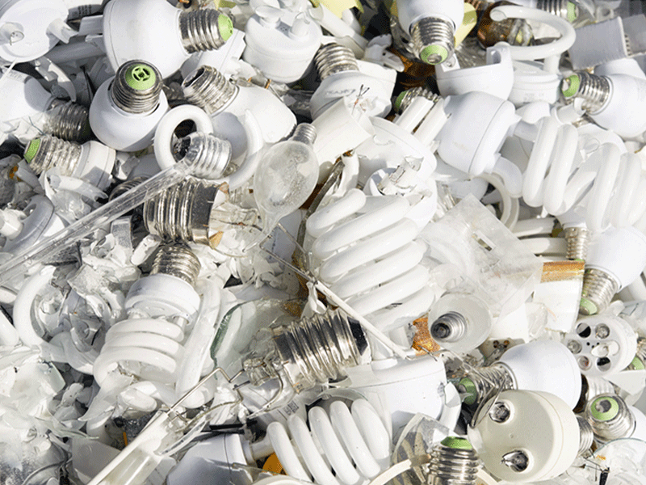
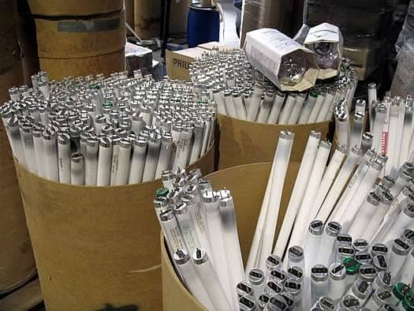
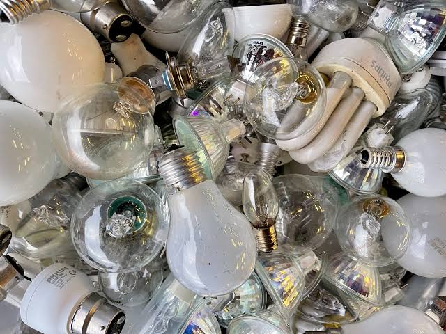
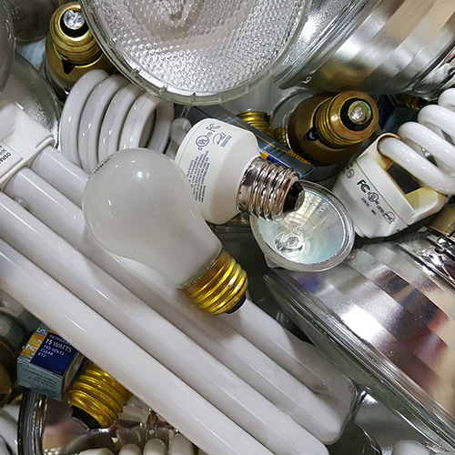
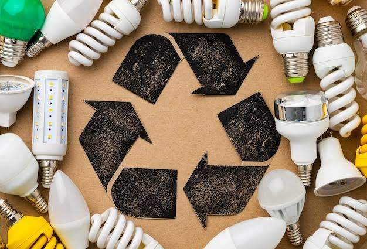

CWM is an authorized company for providing complete recycling solutions for CFL and fluorescent bulb recycling in Sir Lanka. The Central Environmental Authority (CEA) has provides us with authority for recycling bulbs containing mercury and other digital devices, following regulations and protocols set in place.
We have collaborated with the Mercury Recycling Company in Japan to provide appropriate solutions in recycling CFL and fluorescent bulbs and related items, in Sri Lanka.
CFL and fluorescent bulbs contain mercury powder and vapor, both which are known to be hazardous to the human body and the environmental, in general. Therefore, it is our duty, as an organization, to ensure that these harmful substances don’t enter the human body, impacting the quality of life.

Discover how CWM safely recycles CFL and fluorescent bulbs while responsibly handling mercury and other hazardous materials.
Watch Video ▶
▶